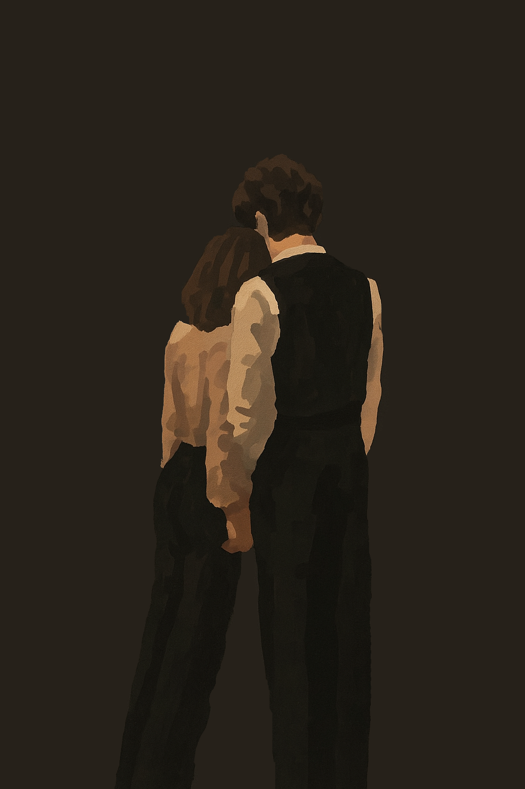

You think
we break
every time we
bend.
That cracks mean
but love isn't .
It’s
seasoned by
still holding up the
roof
we built with our
names.
You try to
fix the thunder.
Smooth the .
Make the sky
for being a
sky.
But listen
I never asked for
forever clear.
Just for
you
to be my
shelter
when it .
We forget the
because it was just
a
ripple in the river.
Not the .
Not the .
And what I remember
is how you made me
laugh
the day after
how you danced
in the .
Do I love you
and go fight ?
Hell no.
You're my
chaos
and my
calm.
My
and my
anthem.
The
war and the .
Yin and ,
.
We
burn.
We
rebuild.
And every time,
we come
home.
To
each other.